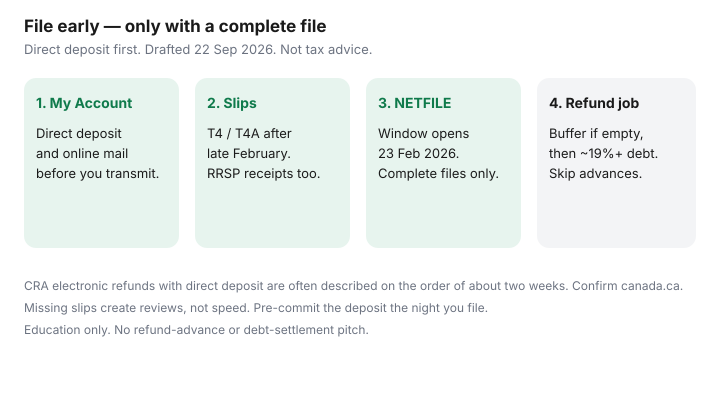

Personal Finance · Canada
File Canadian Taxes Early: Turn Faster Refunds Into Debt and Fee Savings
Households that file in late April often wait on a refund while a card at roughly 20% revolves. The refund is not a raise. It is your own money sitting at the CRA until the return is assessed. Filing earlier, with direct deposit already set, is how that cash reaches a written job — high-interest debt or a fee buffer — before spring interest compounds.
This is an early-filing playbook for Canadian households. It is education, not tax advice. CRA pages used ~22 Sep 2026. Your notice of assessment is the document that governs.
Disclosure: Tax software and banking (HISA) products are offer types. Saving Optimizer may later add partner links. We do not currently claim software or bank partnerships. Education only — not tax, credit, or investment advice. No debt-settlement, payday, or credit-repair offer.
Key takeaways
- Early filing helps when the return is complete and direct deposit is already in CRA My Account. Incomplete slips create reviews, not speed.
- CRA’s public timeline for an electronic refund with direct deposit is on the order of about two weeks. Paper and reviews take longer. Confirm canada.ca the week you file.
- Gather T4 and T4A slips after the late-February issuer deadline. RRSP receipts for the first 60 days of 2026 can arrive after 2 March 2026 (deadline for 2025 contributions).
- Pre-commit the refund: buffer if empty, then ~19%+ debt, then registered room. That triage is on what to do with a tax refund.
- Skip refund advances and “instant refund” loans. Their fees compete with the interest you hoped to avoid.
Why early filing can speed refunds (and when it does not)
CRA processes returns in the order it receives complete files that pass its checks. An electronic return with direct deposit on file is the fast path CRA describes publicly. Filing in early March with a missing T4A, or with a charitable receipt you invent from memory, does not buy speed — it buys a letter.
Early filing does not help when you owe tax and simply want to delay payment, when a prior-year review is still open, or when you transmit before Auto-fill has the slips you need. It also does not create room in a TFSA or RRSP. The deposit is cash with a job, not a product.
NETFILE for initial 2018 through 2025 returns, including the 2025 year, runs from Monday 23 February 2026 at 6:00 a.m. Eastern through Friday 29 January 2027 on CRA’s certified-software notice. Price software and set My Account before that window opens, then transmit when the folder is real. The fee fork is on tax software versus an accountant.

Slips to gather in February
Build a physical or shared folder labelled with the tax year. Typical middle-aged household slips:
- T4 employment, including each job if you changed employers mid-year.
- T4A pensions, scholarships, and other amounts; do not assume Auto-fill has every issuer.
- T5 / T3 investment income if you hold non-registered accounts.
- RRSP contribution receipts for calendar 2025 and for the first 60 days of 2026 (deadline 2 March 2026 for the 2025 deduction year).
- Tuition (T2202), medical receipts, charitable receipts, childcare, and union dues as they apply.
- Québec residents also need Revenu Québec slips and a plan for the TP1 — see federal and Québec filing cost.
Compare the folder to Auto-fill my return inside certified software the day you file. Anything CRA does not have still needs your entry. A missing slip after transmit is a ReFILE or amendment story, not an early-refund story.
Direct deposit setup in CRA My Account
Set direct deposit before you transmit. The click-path, including that GCKey does not open a CRA account, is on set up CRA My Account. Point the deposit to a named HISA or to chequing you will sweep the same day the refund posts. Everyday chequing without a label is how the refund becomes groceries and a weekend.
Confirm the account number against a void cheque or bank screen, not from memory. A wrong digit does not speed anything. Online mail in My Account is how a review letter reaches you while you are still watching for the deposit.
Put refunds toward high-interest debt or fee buffers first
Write the destination the night you file. The household order used across this site:
- Minimums current on every card, line, and loan.
- One month of must-pays in an unregistered HISA if the emergency gap is real.
- Revolving balances around 19% and up (this site’s card benchmark is 20.99% — your agreement governs).
- Registered room only after the first three, following RRSP versus TFSA first.
| Job for the $2,500 | Rough annual effect | When it wins |
|---|---|---|
| Card at 20.99% | About $525 of interest avoided if that slice would have stayed | Buffer already covers one month |
| Named HISA at 2.75% | About $69 before tax | Buffer is empty, or cash is needed this year |
| NSF / overdraft float | Avoids a $10 NSF (cap from 12 Mar 2026 at federally regulated banks) plus stress | Payroll and PADs still collide on the calendar |
The $525 figure is simple interest on $2,500 at 20.99% for a year. It is why waiting until May to “see what happens” is expensive when a card revolves in March and April.
Avoid refund advances and their fees
Refund advances, “instant refund” loans, and similar products lend against a CRA deposit you have not received. The fee is interest by another name. If the point of early filing was to stop 21% card interest, paying 20–40% equivalent on an advance to get the cash three days sooner is the wrong trade.
Wait for the CRA deposit. If cashflow is tight while you wait, cut spending and protect minimums — do not borrow the refund. Payday and credit-repair products are out of scope here and are not recommended on this site.
An early-filing checklist
- CRA My Account open; direct deposit verified; online mail on.
- Slip folder complete versus Auto-fill, with notes for anything still outstanding.
- RRSP first-60-days receipts in hand if you claim them for 2025 (deadline 2 Mar 2026).
- Software certified for NETFILE (and Revenu Québec if you file a TP1).
- Written refund job: buffer / debt / registered — one sentence, shared with the other adult.
- No refund advance. No spend-before-deposit.
- After the notice of assessment: confirm the amount matched the plan; update the monthly budget if a balance owing remains.
Sources & date stamps
- CRA — Find certified tax software; NETFILE window 23 Feb 2026, 6:00 a.m. Eastern, through 29 Jan 2027 (aligned with this site’s software guide; re-checked for this draft ~22 Sep 2026).
- CRA — refund timing and direct deposit guidance on canada.ca; electronic refunds with direct deposit often described on the order of about two weeks.
- CRA — RRSP contribution deadline for the 2025 taxation year: 2 March 2026 (first 60 days).
- CRA — T4 / T4A issuer deadlines (end of February) as published for employers and issuers.
- FCAC — high-interest debt and budgeting pages; NSF fee context after the 12 March 2026 $10 cap on personal deposit accounts at federally regulated banks.
Frequently asked questions
Does filing early always mean a faster refund?
No. Direct deposit and a clean return help. A review, a balance owing, or missing slips can slow or reverse the timeline. CRA’s public electronic-refund guidance is on the order of about two weeks when direct deposit is set up; confirm the current page on canada.ca.
When should I gather slips?
Most T4 and T4A issuers must send slips by the last day of February. RRSP contribution receipts for the first 60 days of 2026 (deadline 2 March 2026 for the 2025 year) arrive later. Do not transmit until the folder matches CRA Auto-fill or you have a written note for anything that is still missing.
Should I take a refund advance?
Usually no. An advance is a loan against a refund you have not received. Fees and interest can erase the debt-paydown math that made early filing worth doing. Wait for the CRA deposit.
Where should I send the refund?
A named HISA or a chequing account you will sweep the same day. Then follow the triage on the tax-refund guide: one-month buffer if empty, then high-interest debt, then registered room.
What if I owe tax?
File on time anyway. An early, accurate return starts the clock on any balance due and avoids a late-filing penalty. Direct deposit still matters if a later reassessment creates a credit.